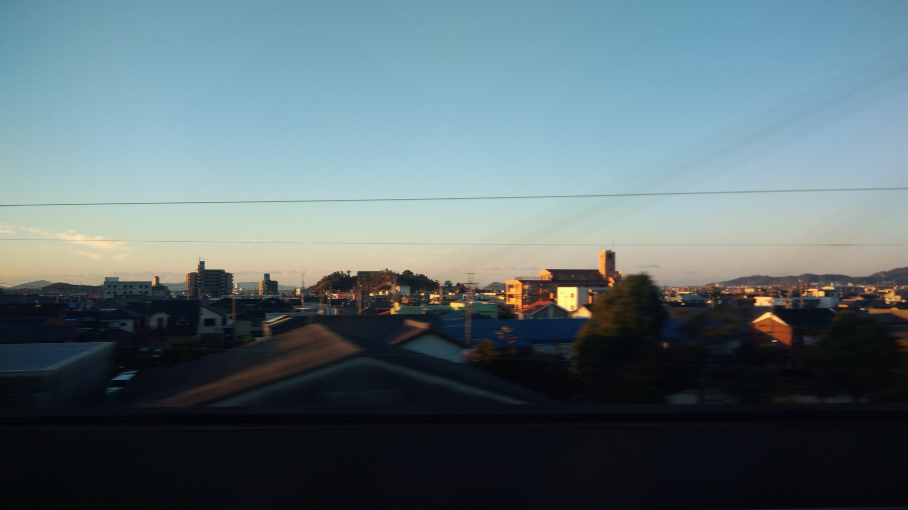

- 區間
- 豐橋→三河安城
- 座位側
- A座・往新大阪方向左側，往東京方向右側
- 通過時間
- 希望號從東京出發約83分鐘
- 可見時間
- 幾秒鐘希望號的概略時間；會隨車速、天氣與遮蔽物而變動。
背後的故事
三河灣的兩座島
三河大島是位於愛知縣蒲郡市外海約3公里的無人島。從新幹線眺望，在海景與城鎮交替的路段，三河灣遠方低矮的島影是一個小小地標。夏季設有海水浴場，也有季節性航班；開放期間與船班日期請參考蒲郡市觀光協會的官方資訊。
蒲郡近岸還有另一座島：竹島。走過長387公尺的竹島橋就能抵達。全島都是八百富神社的境內，本殿位於島頂樹林之中。神社供奉保佑開運與結緣的神明，島上另有四座神社。
據蒲郡市博物館介紹，八百富神社相傳創建於1181年。傳說詩人、三河國司藤原俊成從琵琶湖上的竹生島迎請神明至此。從車窗瞥見的小小島影，藏著可追溯至平安時代的故事。
竹島的森林也別具特色。雖然距離海岸很近，島上的植被卻與對岸的黑松林不同；這片珍貴的植物生態已被指定為國家天然紀念物。走橋可到的神社之島竹島，以及更遠外海的三河大島，呈現同一座海灣的兩種風景。
從東京前往新大阪時，接近豐橋至三河安城區間，請先留意左側A座車窗。前往東京時順序相反，A座在右側。
觀看重點
三河灣與車窗中的風景
三河灣是由渥美半島與知多半島環繞的淺海灣，海面較東京灣和大阪灣平靜，散布著小島，也盛產牡蠣、蛤蜊與海苔。三河大島位於蒲郡外海約3公里，是灣內容易辨認的島嶼之一。
新幹線離開豐橋、朝蒲郡與三根方向前進時，A座側會短暫展開海灣景色。海面並非一直可見，而是在城鎮和山丘間忽隱忽現；不留心容易錯過。請尋找水面遠方低矮的島影。
這段車窗也曾在東洋經濟的新幹線專欄中介紹。晴朗、能見度高的日子，或清晨與傍晚斜射的光線使島的輪廓變深時，較容易辨認。
切換照片，可以比較城鎮後方圓潤隆起的竹島，與外海低矮狹長的三河大島。從列車上難以看清森林或神社細節，但認識兩座島的輪廓，能讓海灣景色更有層次。
地圖
位置一覽
開啟地圖切換景點位置與新幹線觀賞位置。
你的車窗導覽
別錯過窗外風景
延伸閱讀
參考資料
官方指引與車窗風景紀錄。